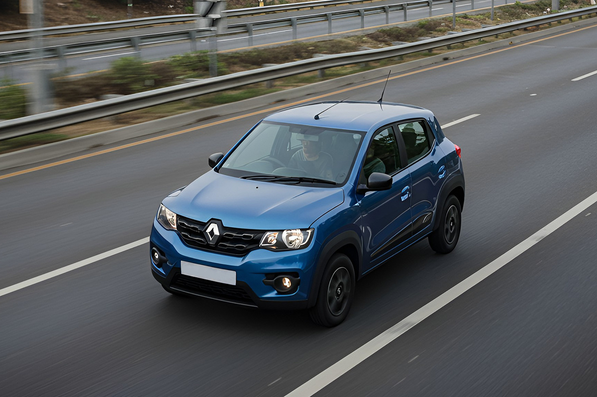
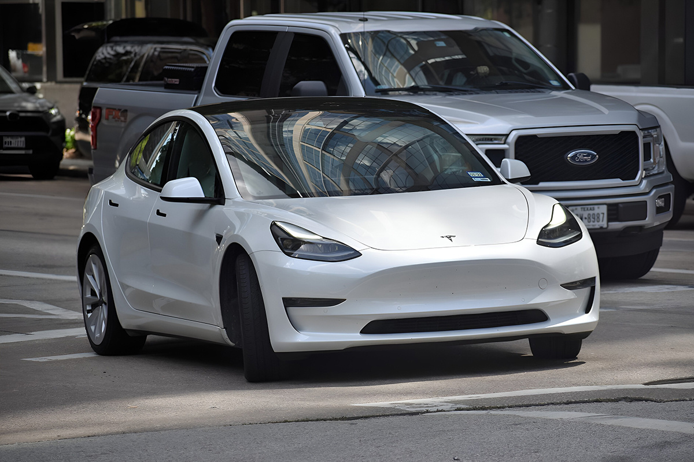
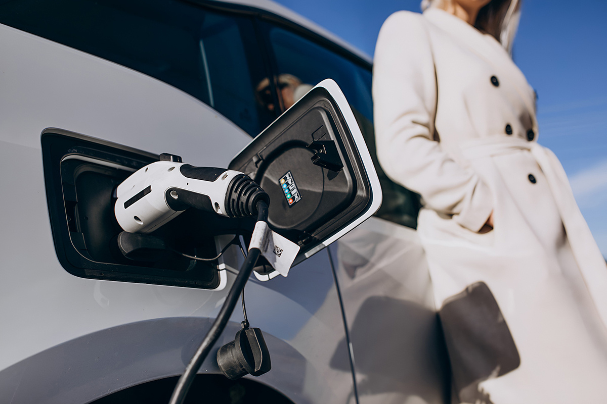

¿Hay match entre Chile y los autos eléctricos?
Todos pensábamos que sí.
Todos pensábamos que sí.

Hace un tiempo que se habla de los nuevos autos eléctricos: cómo contaminan menos, gastan menos energía y marcan el camino hacia un futuro más ecológico. De hecho, en Europa ya se promulgó una ley que exige que todos los autos nuevos vendidos sean cero emisiones a partir de 2035.
En Chile, la historia se remonta al 2008, cuando se presentó el primer auto 100% eléctrico llamado Reva, fabricado por la empresa española Endesa. Hoy, probablemente casi todos conocemos o sabemos de alguien que tiene uno. Se estima que existen alrededor de 6.000 autos eléctricos circulando, según la Asociación Nacional Automotriz de Chile.
Pero, ¿qué debe pasar para que cada vez veamos más autos eléctricos en las calles? ¿Realmente conviene hacer el cambio a un auto de este tipo?

Para empezar, un auto eléctrico usa solo una quinta parte de la energía que gastaría uno a bencina. O sea, si lo ponemos en números, podrías ahorrar hasta un 75% en el costo por kilómetro. Nada mal, ¿no? Por ejemplo, un Renault Kwid eléctrico tiene una autonomía de hasta 298 km y cargarlo en casa o en un centro de carga te sale más o menos $6.000 pesos chilenos.
Y si hablamos de mantención, la cosa se pone aún mejor. Los autos eléctricos no tienen piezas que se desgasten como correas o pistones, así que los costos de mantenimiento bajan bastante. Además, olvídate de los cambios de aceite y filtros. La primera mantención recién se hace entre los 20 mil y 30 mil kilómetros de uso.
Pero eso no es todo. Hay beneficios extra: los autos eléctricos no pagan el Impuesto Verde cuando los inscribes por primera vez, y gracias a la Ley 21.505, si tienes un eléctrico o híbrido con recarga externa, te ahorras el 100% del permiso de circulación en 2024 y 2025. Después, el descuento va bajando hasta el octavo año.

Aunque suene obvio, el costo es el primer factor a considerar al hacer la transición a un auto eléctrico. Se estima que un auto eléctrico puede tener un precio entre 30% a 100% más caro que un modelo a combustión.
En segundo lugar, están las adaptaciones para poder cargarlo en la casa. Si no quieres ir a una electrolinera —como se le llama a las estaciones de carga— debes invertir entre $600.000 a $1 millón de pesos chilenos para poder hacerlo en tu hogar.
Otro de los grandes factores que ha generado debate en tema es el reciclaje de las baterías. Al ser de litio, presentan varios problemas porque sus residuos son muy contaminantes. Actualmente, al reciclarlas solo es posible recuperar el 50% del material y el proceso emite muchísimo Co2.
Igual siempre hay cosas malas en todo, tú sigue imaginándote en tu nuevo auto eléctrico.

Chile es un país largo y angosto. Si tomamos su longitud total, tiene 4.270 kilómetros de norte a sur. Tomando en consideración eso y que en el país aún existen regiones con pocos cargadores, los autos eléctricos son mejores para uso en ciudad o en tramos cortos.
Por ejemplo, la red Voltex de COPEC tiene 112 cargadores en la Región Metropolitana, pero si nos vamos a Temuco solo existe un punto de carga, lo que complica los viajes en carretera.
Como casi todo en la vida, tomar o no tomar esta opción va a depender del uso y el estilo de vida de cada persona. Si te mueves constantemente en ciudad y vives en una zona con electrolineras cerca, puede ser muy buena opción. Si tienes que manejar constantemente largas distancias o a zonas rurales, probablemente sea mejor un auto a bencina.
El camino sigue avanzando. Y quién sabe, tal vez en unos años, los viajes largos en autos eléctricos por Chile sean tan sencillos como cargar el celular. Lo que siempre se mantiene igual, es la necesidad de contar con un Seguro de Auto, no importa que vehiculo elijas y para eso está Compara.
 Tecnología
TecnologíaSi eres como yo y revisas TikTok e Instagram constantemente, te habrás dado cuenta de que estas redes son casi como un experimento social.
 Tecnología
TecnologíaHablamos mucho de inteligencia artificial. La tenemos integrada en nuestra vida, nos ayuda en nuestros trabajos y le preguntamos cosas de…
 Tecnología
TecnologíaDurante años hemos pensado en la inteligencia artificial como algo súper frío: servidores gigantes, computadores procesando datos y…